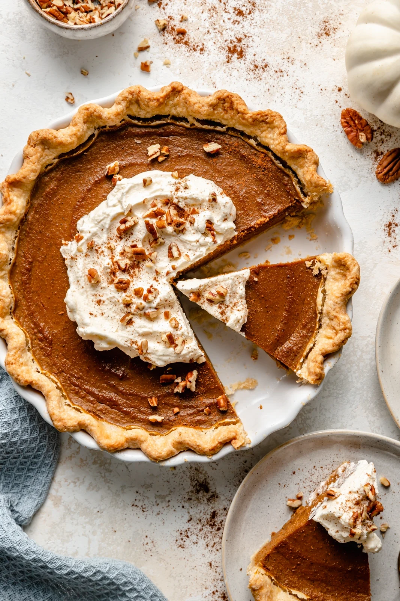

Pumpkin pie is a classic dessert, particularly popular in the United States during the fall and winter months, especially at Thanksgiving. The pie is characterized by a smooth, spiced filling made from pureed pumpkin, eggs, cream or evaporated milk, and a blend of spices such as cinnamon, nutmeg, and ginger, all encased in a flaky pie crust.
